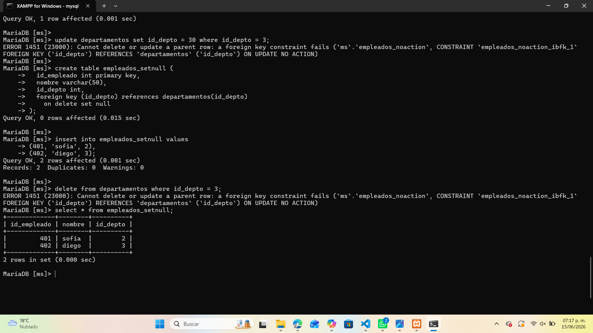
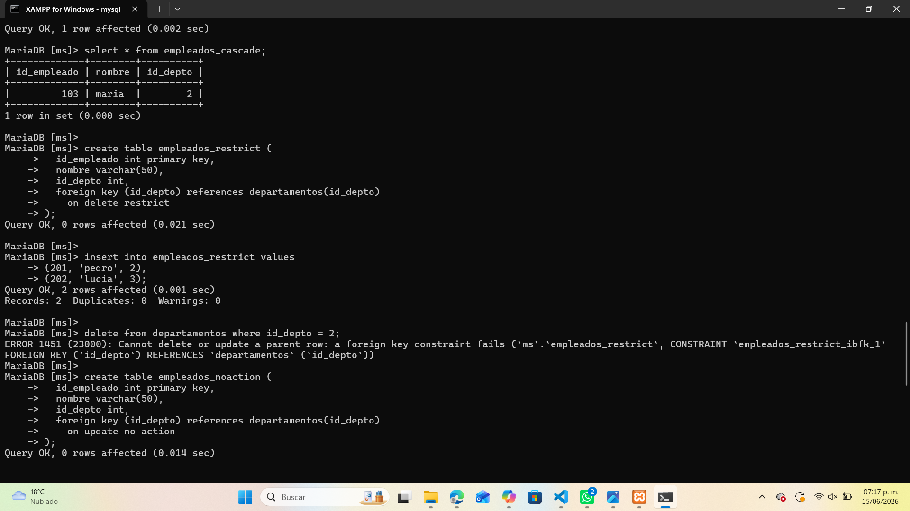
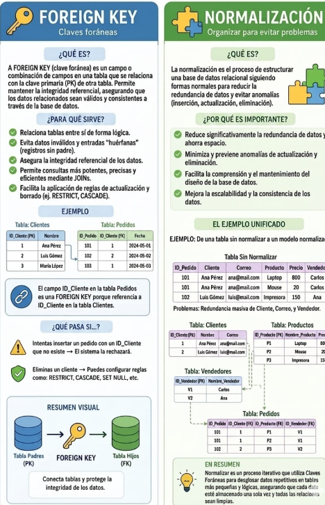

Foreign Key y sus Acciones
Una Foreign Key (clave foránea) conecta dos tablas mediante una relación lógica entre una columna de la tabla hija y la clave primaria de la tabla padre. Estas relaciones permiten mantener la integridad referencial y definir qué ocurre cuando se actualizan o eliminan registros relacionados.
¿Qué es una Foreign Key?
Es una restricción que asegura que los valores de una columna en una tabla correspondan a valores existentes en otra tabla.
Por ejemplo, si un empleado pertenece a un departamento, su id_depto debe existir en la tabla departamentos.
Acciones principales
| Acción | Descripción | Ejemplo |
|---|---|---|
| ON DELETE CASCADE | Si se elimina un registro en la tabla padre, los registros relacionados en la tabla hija también se eliminan automáticamente. | FOREIGN KEY (id_depto) REFERENCES departamentos(id_depto) ON DELETE CASCADE; |
| ON DELETE RESTRICT | Impide eliminar un registro padre si existen registros hijos relacionados. | FOREIGN KEY (id_depto) REFERENCES departamentos(id_depto) ON DELETE RESTRICT; |
| ON UPDATE NO ACTION | Evita actualizar la clave primaria del registro padre si hay registros hijos dependientes. | FOREIGN KEY (id_depto) REFERENCES departamentos(id_depto) ON UPDATE NO ACTION; |
| ON DELETE SET NULL | Si se elimina el registro padre, el valor de la clave foránea en la tabla hija se establece en NULL. |
FOREIGN KEY (id_depto) REFERENCES departamentos(id_depto) ON DELETE SET NULL; |
Ejemplo práctico en MySQL
En los siguientes ejemplos se muestran las acciones aplicadas en tablas relacionadas:


Infografía general

Recomendaciones
- Usa CASCADE solo cuando los registros hijos dependan completamente del padre.
- Aplica RESTRICT para proteger datos relacionados que no deben eliminarse.
- NO ACTION es útil cuando las claves primarias no deben cambiar.
- SET NULL permite conservar los registros hijos sin referencia directa.
- Siempre prueba las acciones con datos de ejemplo antes de aplicarlas en producción.